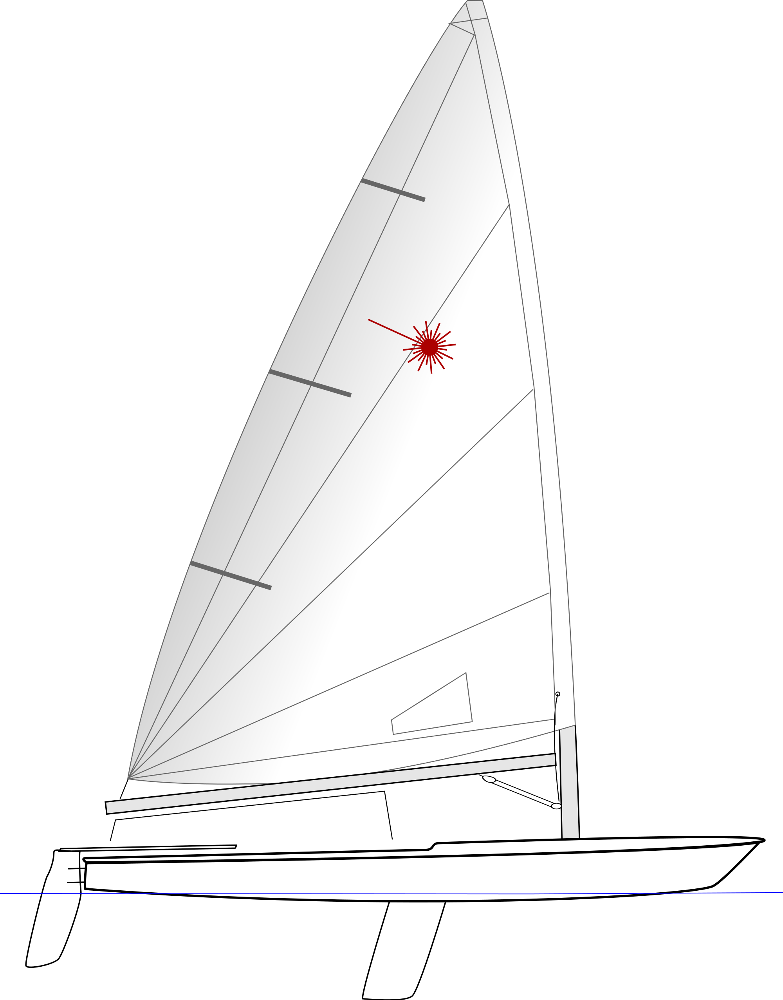

Antonia Sakellariou
ABOUT
Welcome!
I am Antonia, a fourth year Electrical and Computer Engineering student at the University of
Thessaly and I expect to graduate in 2021.
I always wanted to learn and University has offered me the means to accomplish that.
Growing up I realised that I wanted to combine Programming and Biology, my two passions.
Along the way, I have discovered that I also like Computer Architecture, Concurrent Programming,
and Networks all this through the classes that I have taken.
Parallel to my studies since Summer of 2018, I had been working to Circuits and Systems Lab UTH.
I started with a summer internship and continued after the Summer as a full member of the laboratory.
There I developed and implemented an algorithm on General Petri Net to MSFSMs Transformation.
